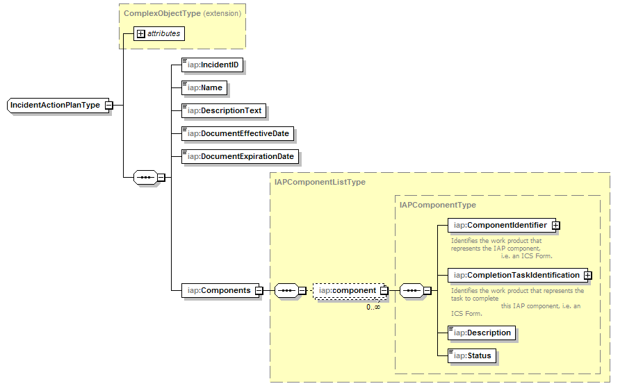

@Endpoint public class IAPServiceEndpoint extends Object implements com.saic.uicds.core.infrastructure.util.ServiceNamespaces
The Incident Action Plan work product is defined as the following data structure:

Work products associated to an IAP as Components can be any work product the client wishes to be part of the Incident Action Plan for example maps, image files, ICS, etc. Most of the time the associated work product will be ICS Forms that are represented by XML documents defined as part of this service. Components of the IAP may also have a UICDS task associated with them that represents a task to complete the work product. Each component also has a status that can be a string value. Currently the IAP Service defines XML schemas for the following ICS forms:
The IAP Service manages work products of type "IAP" and "ICSForm".
NS_AgreementService, NS_AlertService, NS_BroadcastService, NS_DirectoryService, NS_IAPService, NS_Incident, NS_IncidentCommandStructureService, NS_IncidentManagementService, NS_InterestGroupService, NS_LEITSCService, NS_LoggingService, NS_MapService, NS_NotificationService, NS_OasisCAP, NS_ProfileService, NS_ResourceInstanceService, NS_ResourceManagementService, NS_ResourceProfileService, NS_SensorService, NS_TaskingService, NS_WorkProductService| Constructor and Description |
|---|
IAPServiceEndpoint() |
| Modifier and Type | Method and Description |
|---|---|
org.uicds.iapService.AttachWorkProductToIAPResponseDocument |
attachWorkProductToIAP(org.uicds.iapService.AttachWorkProductToIAPRequestDocument requestDoc)
Associate any UICDS Work Product to an IAP work product.
|
org.uicds.iapService.CreateIAPResponseDocument |
createIAP(org.uicds.iapService.CreateIAPRequestDocument requestDoc)
Create an IAP work product.
|
org.uicds.iapService.CreateICSFormResponseDocument |
createICSForm(org.uicds.iapService.CreateICSFormRequestDocument requestDoc)
Create an ICSForm work product.
|
org.uicds.iapService.GetApprovedIAPResponseDocument |
getApprovedIAP(org.uicds.iapService.GetApprovedIAPRequestDocument requestDoc)
Gets the IAP work product that is currently active.
|
org.uicds.iapService.GetIAPResponseDocument |
getIAP(org.uicds.iapService.GetIAPRequestDocument requestDoc)
Get an existing IAP work product.
|
org.uicds.iapService.GetICSFormResponseDocument |
getICSForm(org.uicds.iapService.GetICSFormRequestDocument requestDoc)
Get an existing ICSForm work product.
|
org.uicds.iapService.GetICSFormListResponseDocument |
getICSFormList(org.uicds.iapService.GetICSFormListRequestDocument requestDoc)
Get a list of the existing ICS Form work products for a particular incident.
|
org.uicds.iapService.SetApprovedIAPResponseDocument |
setApprovedIAP(org.uicds.iapService.SetApprovedIAPRequestDocument requestDoc)
Designate this IAP work product as the active IAP for this particular incident.
|
org.uicds.iapService.UpdateIAPResponseDocument |
updateIAP(org.uicds.iapService.UpdateIAPRequestDocument requestDoc)
Update an IAP work product.
|
org.uicds.iapService.UpdateICSFormResponseDocument |
updateICSForm(org.uicds.iapService.UpdateICSFormRequestDocument requestDoc)
Update an ICSForm work product.
|
@PayloadRoot(namespace="http://uicds.org/IAPService",
localPart="CreateIAPRequest")
public org.uicds.iapService.CreateIAPResponseDocument createIAP(org.uicds.iapService.CreateIAPRequestDocument requestDoc)
CreateIAPRequestDocument - @PayloadRoot(namespace="http://uicds.org/IAPService",
localPart="CreateICSFormRequest")
public org.uicds.iapService.CreateICSFormResponseDocument createICSForm(org.uicds.iapService.CreateICSFormRequestDocument requestDoc)
CreateICSFormRequestDocument - @PayloadRoot(namespace="http://uicds.org/IAPService",
localPart="GetIAPRequest")
public org.uicds.iapService.GetIAPResponseDocument getIAP(org.uicds.iapService.GetIAPRequestDocument requestDoc)
GetIAPRequestDocument - @PayloadRoot(namespace="http://uicds.org/IAPService",
localPart="GetICSFormRequest")
public org.uicds.iapService.GetICSFormResponseDocument getICSForm(org.uicds.iapService.GetICSFormRequestDocument requestDoc)
GetICSFormRequestDocument - @PayloadRoot(namespace="http://uicds.org/IAPService",
localPart="UpdateIAPRequest")
public org.uicds.iapService.UpdateIAPResponseDocument updateIAP(org.uicds.iapService.UpdateIAPRequestDocument requestDoc)
UpdateIAPRequestDocument - @PayloadRoot(namespace="http://uicds.org/IAPService",
localPart="UpdateICSFormRequest")
public org.uicds.iapService.UpdateICSFormResponseDocument updateICSForm(org.uicds.iapService.UpdateICSFormRequestDocument requestDoc)
UpdateICSFormRequestDocument - @PayloadRoot(namespace="http://uicds.org/IAPService",
localPart="SetApprovedIAPRequest")
public org.uicds.iapService.SetApprovedIAPResponseDocument setApprovedIAP(org.uicds.iapService.SetApprovedIAPRequestDocument requestDoc)
ActivateIAPRequestDocument - @PayloadRoot(namespace="http://uicds.org/IAPService",
localPart="GetApprovedIAPRequest")
public org.uicds.iapService.GetApprovedIAPResponseDocument getApprovedIAP(org.uicds.iapService.GetApprovedIAPRequestDocument requestDoc)
throws com.saic.uicds.core.infrastructure.exceptions.InvalidProductIDException
requestDoc - com.saic.uicds.core.infrastructure.exceptions.InvalidProductIDException@PayloadRoot(namespace="http://uicds.org/IAPService",
localPart="AttachWorkProductToIAPRequest")
public org.uicds.iapService.AttachWorkProductToIAPResponseDocument attachWorkProductToIAP(org.uicds.iapService.AttachWorkProductToIAPRequestDocument requestDoc)
AttachICSFormToIAPRquestDocument - @PayloadRoot(namespace="http://uicds.org/IAPService",
localPart="GetICSFormListRequest")
public org.uicds.iapService.GetICSFormListResponseDocument getICSFormList(org.uicds.iapService.GetICSFormListRequestDocument requestDoc)
GetICSFormListRequestDocument - Copyright © 2012. All Rights Reserved.